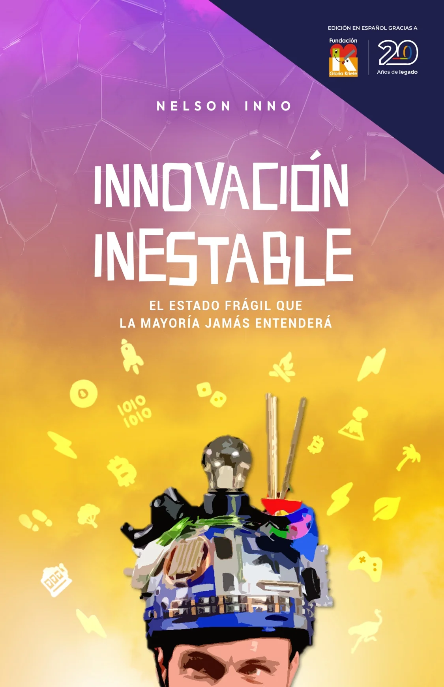

★★★★★
Léelo con tus seres queridos de todas las edades
Cuanto antes, mejor. Luego pasa a los libros que él recomienda. Lo recomiendo ALTAMENTE.
Si a ti o a tu hijo les encantó El Alquimista, Los 7 hábitos de los adolescentes altamente efectivos o Hábitos atómicos, aquí ves cómo se compara Innovación Inestable. Somos parciales, claro, así que también decimos lo que esos libros hacen y el nuestro no intenta hacer.
Una fábula corta sobre un joven pastor que sigue su sueño a través del desierto.
En común: Los dos hablan de escuchar ese llamado interior y tener el valor de seguirlo.
Lo que agrega Innovación Inestable: Innovación Inestable es no ficción. En lugar de una fábula, tienes historias reales de un emprendedor real e ideas concretas para actuar sobre tu llamado en un mundo que cambia rápido.
Elígelo mejor si: quieres una historia para perderte en ella, más que ideas para actuar.
Un método clásico de hábitos, adaptado para adolescentes.
En común: Los dos impulsan a los jóvenes a hacerse responsables de su propia vida.
Lo que agrega Innovación Inestable: Innovación Inestable no es un método paso a paso. Trata de mentalidad, del momento correcto y del valor de construir algo. Juntos funcionan bien: hábitos para el día a día, Innovación Inestable para la pregunta más grande de qué construir.
Elígelo mejor si: tu hijo necesita un sistema claro y estructura para el día a día.
Una guía práctica sobre cómo los pequeños hábitos se acumulan con el tiempo.
En común: Los dos coinciden en que las acciones ordinarias, repetidas por mucho tiempo, llevan a resultados extraordinarios.
Lo que agrega Innovación Inestable: Innovación Inestable se enfoca menos en la mecánica de los hábitos y más en la dirección: qué problema vale tu esfuerzo y cómo reconocer tu momento de la verdad.
Elígelo mejor si: quieres un sistema detallado, paso a paso, para construir hábitos.
Filosofía estoica aplicada a convertir obstáculos en oportunidades.
En común: Los dos se apoyan en el estoicismo y enseñan que controlamos nuestra respuesta, no el mundo.
Lo que agrega Innovación Inestable: Innovación Inestable aplica esa mentalidad a la innovación: el caos, el cambio acelerado, los incentivos y las megatendencias de la próxima década.
Elígelo mejor si: quieres profundizar en el estoicismo en sí.
El clásico sobre comunicación y relaciones con los demás.
En común: De adolescente, Nelson fue a los cursos de comunicación de Dale Carnegie, y el libro está en su lista de lecturas recomendadas.
Lo que agrega Innovación Inestable: Innovación Inestable trata la comunicación como una habilidad entre varias, junto con contar historias, pensar en imágenes y modelar negocios, todas al servicio de construir algo.
Elígelo mejor si: la comunicación y las relaciones son lo principal que quieres trabajar.
La visión de un fundador sobre cómo construir startups que crean algo realmente nuevo.
En común: Los dos valoran las ideas contrarias y tener razón cuando la mayoría se equivoca.
Lo que agrega Innovación Inestable: Innovación Inestable no es solo para fundadores de startups. Está escrito para adolescentes, empleados y constructores por igual, desde una mirada latinoamericana y europea.
Elígelo mejor si: ya estás construyendo una startup de tecnología y quieres las ideas de un fundador.

Cuanto antes, mejor. Luego pasa a los libros que él recomienda. Lo recomiendo ALTAMENTE.
Uno de los libros más amigables sobre innovación que he leído últimamente. Muy fácil de leer, rápido y entretenido. Me encanta la combinación de herramientas, ideas intelectuales, anécdotas cortas y una dosis saludable de ejemplos y casos.
Este libro fue muy provocador e inspirador. Después de leerlo, me siento más motivado para crear valor en el mundo.
Algunos libros con un espíritu parecido son El Alquimista de Paulo Coelho, El obstáculo es el camino de Ryan Holiday, Hábitos atómicos de James Clear y De cero a uno de Peter Thiel. Para adolescentes, Los 7 hábitos de los adolescentes altamente efectivos de Sean Covey es un buen complemento.
En espíritu, sí: los dos hablan de seguir un llamado interior. Pero El Alquimista es una fábula, e Innovación Inestable es no ficción, con historias reales e ideas prácticas para actuar sobre ese llamado.
En parte. Ayuda a conocerte a ti mismo, pero está más cerca de ser un libro de filosofía disfrazado de libro de innovación y emprendimiento. No promete una receta para el éxito.
Nelson Inno y Adam Nili tienen una lista de 15 libros recomendados, desde The Little Book of Stoicism hasta Pensar rápido, pensar despacio y El optimista racional.